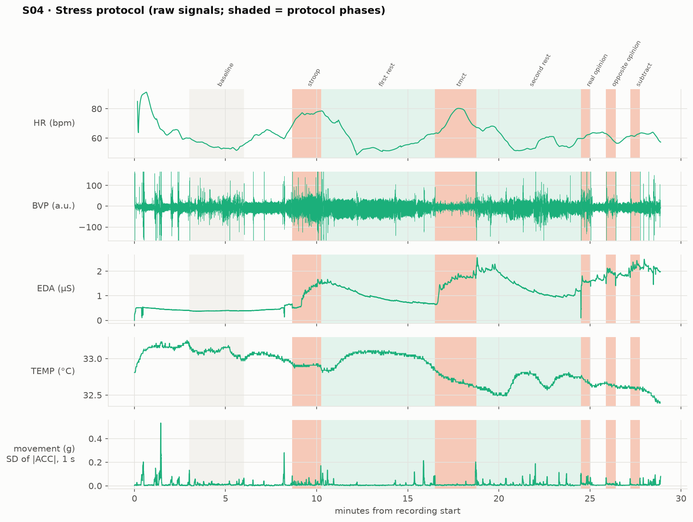
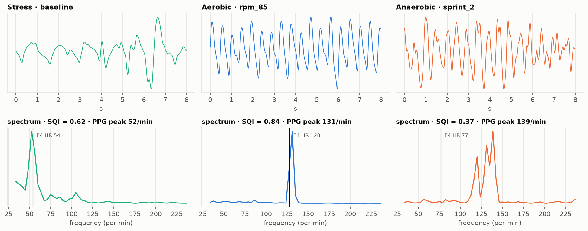

Heart rate, electrodermal activity, skin temperature and movement recorded with an Empatica E4 during acute psychological stress, aerobic cycling and anaerobic sprints. Physiology first, every result computed per participant, and machine learning evaluated only on people it has never seen.
An accelerometer tells us that someone is moving. Heart rate, electrodermal activity and skin temperature tell us how the body is responding. How do wearable physiological signals differ between aerobic exercise, anaerobic exercise and acute stress? And how much of any difference is physiology, and how much is simply movement?
3-axis accelerometer (32 Hz). Context: pedalling rhythm, sprint bursts, stillness.
Wrist PPG (64 Hz) → heart rate and beat intervals: load, sympathovagal balance, HRV.
Electrodermal activity (sympathetic sudomotor drive, sweating) and skin temperature (peripheral perfusion).
The same public dataset has already been used to train classifiers that report 84–93% accuracy. This project asks a different question, what does the wearable actually measure, and does it hold up in new people?, and changes the method at every step to answer it honestly.
The paper's accuracy figures and this project's macro-F1 are not directly comparable (different classes and metrics). The leakage test shows how large the gap between window-level and person-level validation is on this dataset.
PhysioNet Wearable Device Dataset from Induced Stress and Structured Exercise Sessions (v1.0.1; Hongn et al., Scientific Data 2025). 30 participants completed all three protocols, so most comparisons are within the same person. All 707 files were verified against the official checksums.
Seated. Baseline → Stroop (v1) → Trier Mental Challenge Test (timed arithmetic with aversive noise) → rest → opinion, opposite opinion and serial-subtraction tasks.
Incremental stationary cycling from 60 to 110 rpm with rising resistance, or a 70–95 rpm group spinning class.
Wingate-style: 3–4 all-out sprints of 30–45 s, each followed by ~4 min of unloaded pedalling.

Empatica's heart rate was often physiologically implausible during cycling: flat, erratic, or locked onto the pedalling rhythm. Every 30-s window got a quality verdict per signal, using signal properties only, never the expected result.

Share of 30-s windows per physiological state. Hover the bars.
Each person counts once: windows are averaged within the participant first, and differences are paired within person, with bootstrap 95% confidence intervals.
HR response to the mental-stress task (95% CI 2.2–7.8, same day). HR then drops below the starting baseline in recovery: the baseline held anticipatory arousal.
Wrist movement decreases under stress. The physiological response happens with the body stiller than at rest, so it cannot be a movement artefact.
At the aerobic peak, ~10× the stress response, with EDA ~11× its resting level (vs ~1.6× under stress).
After a sprint, HR keeps climbing. The cardiovascular response lags the mechanical effort. Valid wrist HR returns only about a minute later.
Mean change from the 60 s before onset ± 95% CI across participants. Shaded band = median task or sprint duration. Hover for values.
Paired difference per participant (dot = mean, bar = 95% CI). Exercise contrasts compare different days.
One line per participant (hover to isolate); black = median. Note EDA's late, steep rise: a sweating threshold.
Each row is one person: TMCT minus seated rest, same day.
Participant medians; colour = level relative to the other states. A heatmap rather than a radar: these axes have no meaningful order.
ICC: share of window-to-window variance that is between people. High ICC means population thresholds generalise poorly.
Classes: stress tasks, aerobic stages, and sprints plus their first 2 min of recovery. Validation: leave-one-subject-out. Metric: macro-F1, with CIs from resampling participants.
With windows of the same person in training and test, the model mostly recognises individuals.
Random forest, leave-one-subject-out. Switch to the seated task, where movement cannot help.
Movement plus one binary "HR missing" flag gets almost as far as all signals. The PPG failing during sprints is a property of the sensor, not of physiology.
Row-normalised confusion matrix. Hover for counts.
36 young, healthy adults. Cohort is confounded with sex, age, training status and protocol version (v1: 18 men; v2: 17 women + 1 man).
No ECG, power output, VO₂ or lactate. "Aerobic" and "anaerobic" are protocol labels, not verified metabolic states.
HR is unmeasurable during sprints and often corrupted while pedalling. HRV is only defensible while seated.
The resting reference is on another day. The 30-s stress tasks are short relative to EDA and HRV dynamics.
Nothing here supports clinical inference or diagnosis.